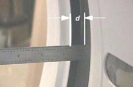
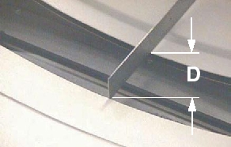
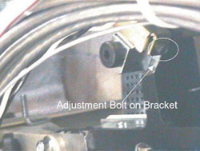

Operating Documentation
Direction 5307452-8EN, Rev# 4
Discovery CT750 HD Service Methods - Adv
Operating Documentation |
| Required Persons | Preliminary Reqs | Procedure | Finalization |
|---|---|---|---|
| 1 | Timing Not Applicable | 45 mins | Timing Not Applicable |
Measure collimator and cover difference and scan window gap. Adjust as necessary. Visually inspect.
| Last Revised: | October 16, 2008 |
| Item | Qty | Effectivity | Part# | Manufacturer | |
|---|---|---|---|---|---|
| Calipers or steel metric ruler | 1 | - | - | - | |
| 3 mm, 4 mm, and 5 mm hex wrenches | 1 | - | - | - | |
| Standard FE Tool Kit | 1 | - | - | - | |
| Potential for Equipment Damage. The cones of the front and rear gantry covers must be aligned within specification to ensure proper scan window fit. If the scan window is not fit properly, fluids can get into the collimator, causing permanent damage. | |
Remove the gantry right side cover and turn off Axial drive from the service switch panel.
Refer to Replacement → Gantry → Enclosure → (Cover Removal Procedures).
Remove the scan window.
With the front and rear covers secured in place and scan window removed, rotate the collimator to the 3 o’clock position.
Using an appropriate (calipers or steel ruler), measure the distance (d) in millimeters (mm) from the collimator’s surface to the metal scan window rim, on both the front and rear covers. Record measurements. See Illustration 1.
Illustration 1: Collimator Cover Gap Distance

If the difference |df-dr| between the front (f) and rear (r) measurements is greater than 3mm, the front cover must be shifted the appropriate direction.
For example, if the distance between the collimator and the front cover is 5.5mm and the distance between the collimator and rear cover is 10.5mm, then the difference is 5mm. The front cover must be shifted right at least 2mm. This means that mounting bracket on the front cover must shifted at least 2mm left.
Install the front cover dolleys and pull the front cover away from the gantry far enough to access the mounting plate on the left side (TGPU side).
On the front cover, lightly loosen the screws securing the left mounting plate (TGPU side). Slide the plate in the direction that will give you the appropriate shift and re-secure screws. See Illustration 2.
Install the front cover.
| NOTE: | Only one mounting plate can shift so only very small adjustments of a few millimeters can be done or should be needed. |
Illustration 2: Gantry Cover Mounting Plate and Screws

Rotate the collimator to the 9 o’clock position.
Measure the distance (D) between front and rear covers of the scan window rims. Measure the distance between the two covers at the bottom of the cone. See Illustration 3.
Illustration 3: Scan Window Gap Distance

If the spacing is the spacing is greater than 86 mm, bring the covers together using the bolts located on the end of each cover latch. See Illustration 4.
Illustration 4: Cover Bracket Adjust Bolt Location

Install the scan window.
Refer to Replacement → Gantry → Enclosure → (Cover Removal Procedures).
Check that the scan window is not raised higher than the front or rear cover at any location on the circle and that the window is not wrinkled. See Illustration 5.
If the scan window is raised above the rim, check for contrast or other contaminates on the scan window gaskets. If nothing found, order a new scan window and replace at next opportunity. A good seal is important to keep contrast or any other liquids from damaging gantry components.
Illustration 5: Correct Scan Window Alignment

Enable axial drive from the service switch panel and install the gantry right side cover.
No finalization required.